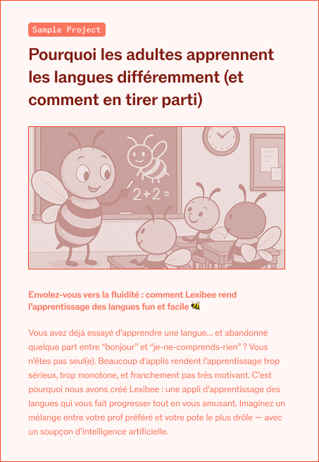
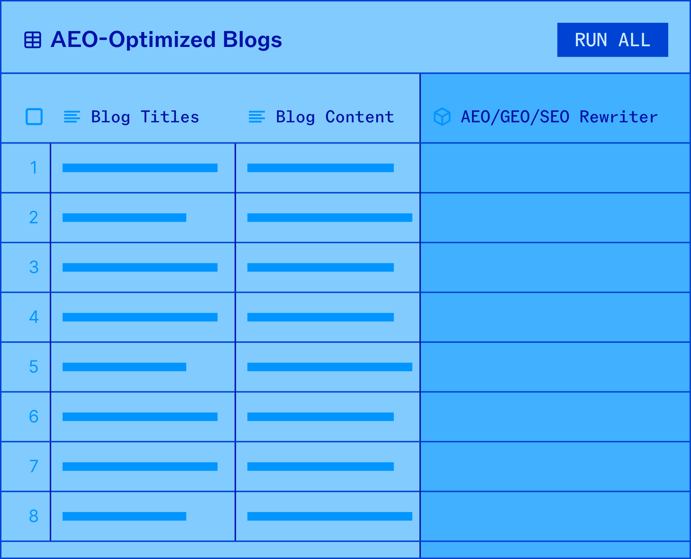
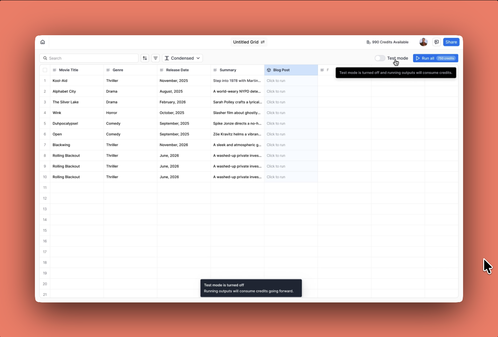
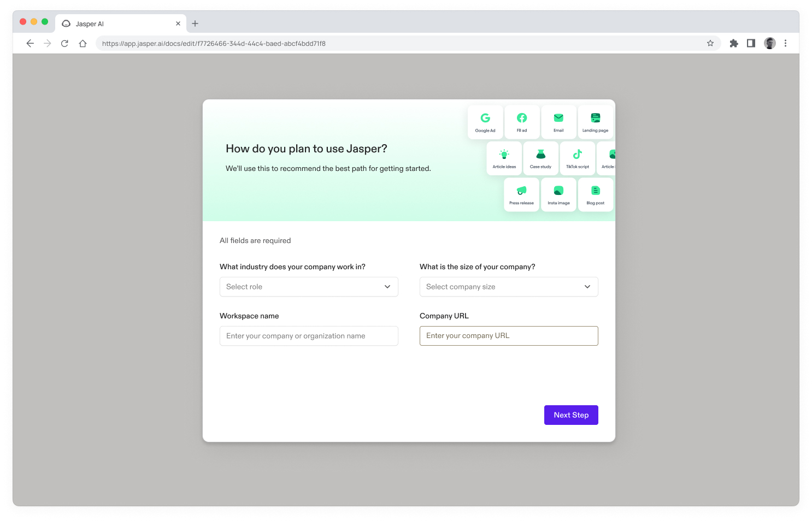
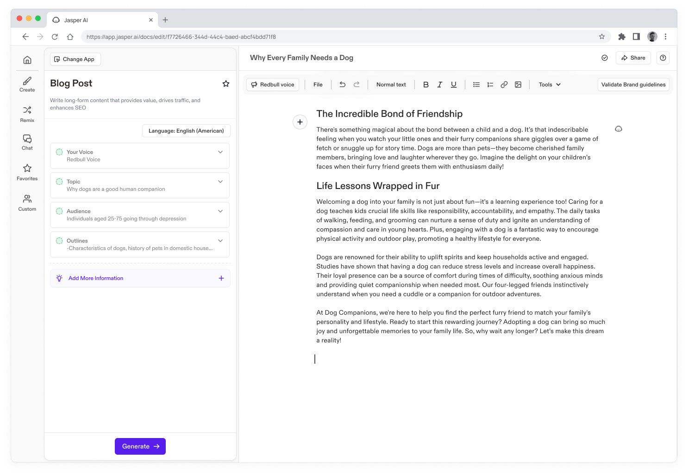
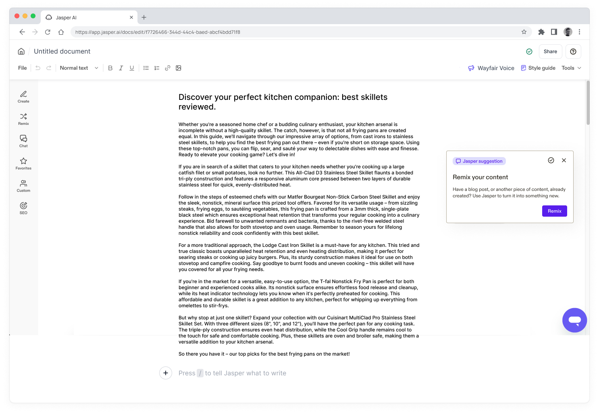
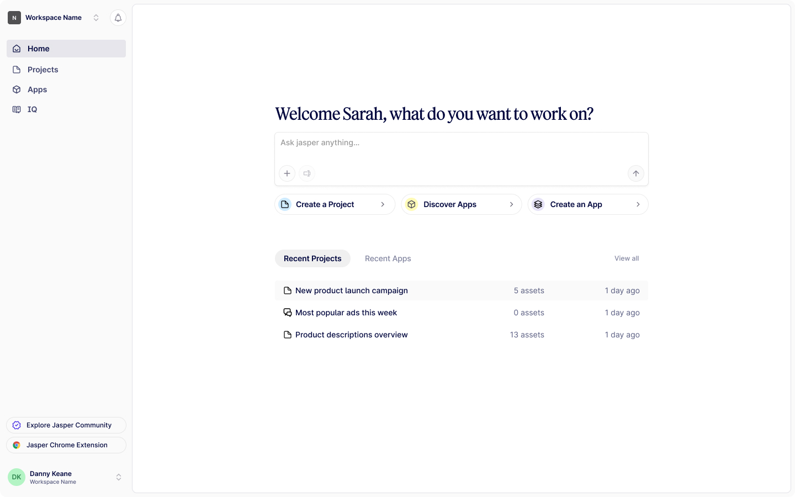

2026 EDITION
2026 EDITION
Selected Work
Jasper is an AI platform built for marketing teams to plan, create, and scale content.
At Jasper, I work on the Growth and Workflow Interface team, focusing on activation and adoption of Jasper IQ—brand intelligence that supports on-brand content at scale.
Alongside that, I designed first-time experiences for Canvas and Grid, where most content creation happens.
IQ AGENT
Comprehensive analytics platform for tracking campaign performance

Agentic IQ Setup
THE PROBLEM
Prior to Agentic IQ Setup, configuring Brand Voice, Audiences, and Knowledge required significant manual input, domain expertise, and iteration. Outcomes varied widely depending on who set it up and how much time they invested, making it difficult for admins to reach value quickly and consistently.
THE SOLUTION
An opinionated, agent-driven setup flow where the IQ Agent researches company context by scraping the company website and synthesizing public information to automatically generate foundational IQs. Agents handle creation, while users make lightweight, non-blocking decisions, enabling fast adoption without requiring deep expertise or upfront configuration.
THE IMPACT
While not yet launched, early validation suggests the experience significantly reduces setup friction and clarifies IQ value upfront.
- Clear first-time path to a usable Brand Voice, Audiences, and Knowledge through agent-generated foundations
- Lower cognitive load for admins by shifting effort from manual creation to lightweight review
- More consistent IQ quality regardless of admin expertise or time invested
- A scalable foundation for an IQ lifecycle that supports ongoing refinement and evolution over time
Canvas
SAMPLE PROJECT
First-time Canvas experience through example-led learning

Canvas Sample Project
THE PROBLEM
As Canvas launched, new users were introduced to a powerful but open-ended workspace. While feature-level onboarding explained where tools lived, it didn't always help users understand how Canvas works as a complete workflow. This made it difficult for first-time users to know where to start or what "good" looked like.
THE SOLUTION
A Sample Project—a pre-built Canvas that demonstrates a realistic, multi-channel marketing campaign—paired with an optional guided tour.
The experience shows how Apps, Chat, project settings, and bulk editing work together, allowing users to explore freely or opt into step-by-step guidance based on their learning style.
THE IMPACT
Shipped as an experiment for self-serve users and fully rolled out to Business customers.
- Consistent engagement with the Sample Project, indicating demand for example-led learning
- Neutral to positive impact on self-serve trial conversion
- High completion rates among users who started the tour, suggesting clarity once users opted in
- Key insight that seeing a finished example alone may deliver much of the first-time value, informing future template-based activation strategies
Grid TEST MODE
Safe experimentation for consumption-based AI credits


Grid Test Mode
OVERVIEW
As Jasper transitioned to consumption-based pricing, AI generation costs became directly tied to usage across Grid, Agents, and API. This shift unlocked more scalable and value-aligned pricing—but also introduced new UX challenges around cost visibility, experimentation, and trust.
Grid, as a spreadsheet-style surface for high-volume generation, required especially careful design to ensure users could explore confidently without fear of unintended spend.
THE PROBLEM
With credits attached to Grid actions, users struggled to understand when generation would incur cost. This created hesitation during early exploration, particularly for new Grid users, and raised concerns for admins about accidental or uncontrolled credit usage.
THE SOLUTION
Test Mode for Grid—a clearly defined, non-billable state that allows users to experiment safely before committing to paid runs.
Test Mode:
- Enables free generation for designated testing rows
- Visually distinguishes test rows from billable rows
- Clearly communicates when actions will consume credits
- Locks paid actions when credits are unavailable, with clear explanations
This created a deliberate boundary between learning and execution, reducing anxiety while preserving transparency.
THE IMPACT
Shipped as a core component of the consumption-based pricing rollout.
- Reduced friction and fear during first-time Grid usage
- Encouraged experimentation without financial risk
- Improved clarity and trust around credit-based actions
- Established a reusable UX pattern for safe exploration across future credit-based surfaces
experiments shipped
Progressive Signup
A progressive, chat-based signup designed to reduce friction and guide users into the right first experience.

A guided signup will reduce friction and drive more intentional user input, improving trial quality.
Ask Jasper
Improving discoverability of Ask Jasper by simplifying how users add and edit content in the Editor.

Making Ask Jasper visible at content entry points will clarify create vs. edit actions and drive more intentional AI usage.
Suggestion Chip
Improving early activation and habit formation by surfacing contextual suggestions in the Editor that guide users to research, remix content, and refine Brand Voice.

Contextual suggestion chips will prompt more intentional in-Editor actions, increasing early activation and deeper adoption of Jasper's core features.
Get Started Hero
Redesigned hero section to improve first-time user activation.

A clearer value proposition in the hero will increase trial-to-activation rates.
Zero to Project
Streamlined onboarding to help users create their first project faster.
Reducing steps to first project will improve trial conversion and early retention.